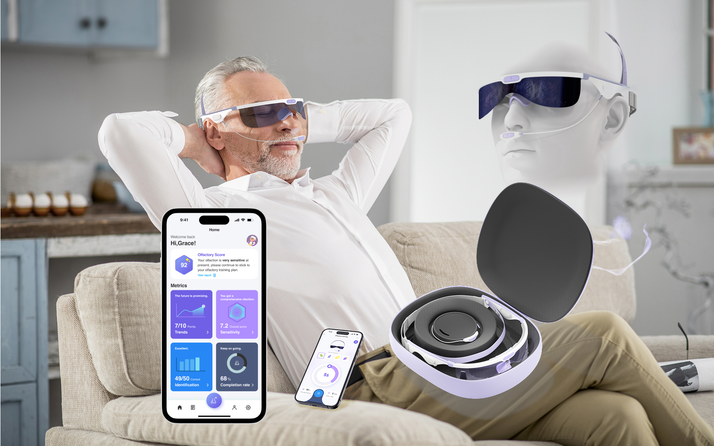

01 / PREVENTIVE HEALTHCARE · AGEING · MULTISENSORY
OlfaMate
Visual-Augmented Olfactory Training for Ageing Populations: a service design approach to preventive health management through multisensory wearable systems.

01 / OVERVIEW
From overlooked sense to proactive health service.
OlfaMate explores how olfactory training can become a more engaging, observable and socially supported health experience. The concept integrates a wearable olfactory training device, real-time visual feedback, a mobile application and offline workshops into one product-service system.
02 / DESIGN OPPORTUNITY
The challenge
Olfactory decline can be difficult for people to notice and difficult to train consistently. Traditional training can also lack feedback, motivation and continuity between home and clinical contexts.
The opportunity
Make an invisible sensory process more visible, understandable and motivating while connecting everyday training with personalised data and social support.
03 / SYSTEM
One service, three connected layers.
01 — Wearable device
Delivers structured olfactory stimuli and translates training activity into immediate visual feedback, helping users understand and stay engaged with the exercise.
02 — Mobile application
Organises training records and personalised analysis, creating a longer-term view of participation and potential early risk insights.
03 — Community workshops
Offline sessions add a social layer, creating opportunities for guidance, peer support and sustained participation.
Service ecosystem
Users, families, clinicians and community facilitators form a connected ecosystem around the training journey.
04 / PROTOTYPING
Making multisensory interaction tangible.
The prototype direction explores wearable form, olfactory stimulation, visualisation and interaction feedback. Digital prototyping can simulate physiological-data visualisation and help test how feedback changes attention, understanding and motivation.
05 / RESEARCH DIRECTION
How might multisensory service design transform a repetitive health exercise into an engaging, measurable and socially supported everyday practice?
06 / FUTURE
From prototype to preventive healthcare ecosystem.
Future development can investigate user testing with older adults, longitudinal training adherence, multisensory experience, clinician perspectives and the role of AI in personalised feedback and risk communication.